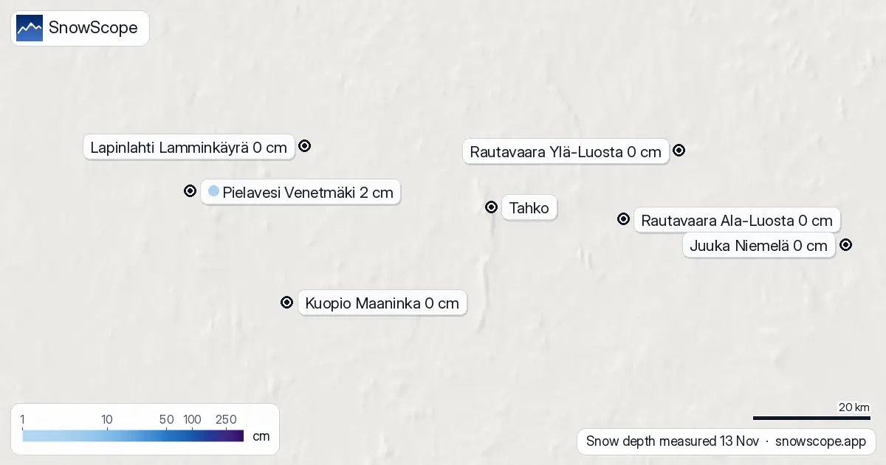

Snødybde i Tahko: åpent på produsert snø mens landskapet rundt er bart (14. november 2026)
Tahko åpnet alpinsesongen 13. november, med en ny stolheis og en åpningshelg som varer til 15. november. Skisenterets forside viste 2 av 14 heiser i drift. Alt i disse bakkene er produsert snø. Værstasjonene rundt Nilsiä forteller hvordan landskapet egentlig ser ut: morgenen 12. november hadde Kuopio Maaninka 4 cm og Rautavaara Ylä-Luosta 3 cm; et døgn senere var begge tilbake på 0 cm.
Se snøprognosen for Tahko direkte i SnowScope-appenSnødybde, puddervarsler og 3D-kartet, gratis.
Hvite nedfarter, brun skog
Snøen som falt 11. og 12. november, smeltet i løpet av et døgn på stasjonene. Vårt anslag for nysnø de siste sju dagene er rundt 7 cm, men svært lite av den ligger fortsatt på bakken utenfor nedfartene.
Derfor kan Tahko åpne nå: skisenteret bygger de første nedfartene av snø produsert på kalde netter. Det er ikke naturlig snødekke.

Uka som kommer
Vi venter rundt 8 cm i bunnen og 7 til 8 cm på toppen de neste sju dagene. De andre prognosene vi sammenligner med, gir 12 til 35 cm på toppen, et stort sprik, med mye regn innimellom: mer enn halvparten av nedbøren i bunnen og rundt en tredel på toppen. Snøgrensen ligger rundt 90 m, like under bunnen av heisene på 97 m. Vent deg våt snø, sludd og litt regn.
Hva som er vanlig her
Våre 46 tidligere vintrer gir Tahko en vanlig naturlig snødybde på 6 cm 14. november, 15 cm 30. november og 25 cm 15. desember. I omtrent én vinter av åtte er det ingen naturlig snø i det hele tatt 14. november. En middels vinter topper seg på rundt 72 cm.
Forrige vinter var tynn, med en største snødybde på 42 cm og 131 dager med snø, mot 182 dager i en middels vinter.
Hva som er åpent
To heiser og nedfartene de betjener, ifølge skisenterets forside 13. november, med åpningsfestival 13. til 15. november. Flere nedfarter avhenger av kalde netter for snøproduksjon, ikke av ukas blandede vær.
Tips til skiløpere
- Tidligsesong på produsert snø er hardt og raskt om morgenen, mykt om ettermiddagen hvis det regner. Skarpe kanter hjelper.
- Utenfor preparert løype og i skogsløypene er det ikke noe underlag i det hele tatt denne uka; ikke regn med dem.
- Sjekk heisstatusen på skisenterets forside samme dag; antallet åpne heiser endrer seg raskt nå.
Flere kart (eksterne nettsteder)
Referanser og kilder
- Meteorologisk institutt i Finland (FMI), åpne data (CC BY 4.0) en.ilmatieteenlaitos.fi/open-data
- Tahko, åpningsarrangement for alpinsesongen, lest 2026-11-13 www.tahko.com/tapahtuma/rinnekauden-avaus/
- Tahko, offisiell forside (heisstatus) www.tahko.com/
Om tallene
Målt snø: morgenmålinger 13. november 2026 ved de offisielle værstasjonene i Sverige (SMHI åpne data), Finland (FMI åpne data, CC BY 4.0) og Norge (MET Norways stasjonsrapporter, CC BY 4.0, publisert av Ogimet). Norges nasjonale snøkart seNorge (NVE og MET Norway, NLOD) gir anslagene på et rutenett på 1 km for bakkene. Våre tall: SnowScopes prognose for de neste sju dagene i tre høyder i skisenteret, sammenlignet med uavhengige prognoser (ECMWF, ICON, GFS, GEM) for 14. til 20. november; snøhistorikk for 46 tidligere vintre (1980-81 til 2025-26), en modell av fortiden korrigert for høyde. Åpningsdatoer: skisentrenes egne sider, lest 13. november 2026. Løypelengde og antall heiser: kartlegging i OpenSkiMap.
Offisielle snøskredvarsler: EAWS – European Avalanche Warning Services
Siter denne rapporten
For forskning, undervisning eller presse: tallene og diagrammene kan brukes fritt under CC BY 4.0 med denne kildehenvisningen.
SnowScope (2026), Snødybde i Tahko: åpent på produsert snø mens landskapet rundt er bart (14. november 2026), https://snowscope.app/blog/nb/2026/11/tahko-snow-depth-14-november-2026.html, hentet 2026-11-14
SnowScope (Atlas Labs). (2026, November 14). Snødybde i Tahko: åpent på produsert snø mens landskapet rundt er bart (14. november 2026). SnowScope snow reports. https://snowscope.app/blog/nb/2026/11/tahko-snow-depth-14-november-2026.html
BibTeX
@misc{snowscope2026tahkosnowdepth14november,
author = {{SnowScope (Atlas Labs)}},
title = {Snødybde i Tahko: åpent på produsert snø mens landskapet rundt er bart (14. november 2026)},
year = {2026},
month = nov,
howpublished = {\url{https://snowscope.app/blog/nb/2026/11/tahko-snow-depth-14-november-2026.html}},
note = {Published 2026-11-14 20:11 UTC; accessed 2026-11-14}
}· CC BY 4.0 · Metoder, data og verktøy →
Tahko: snø og temperatur etter høyde, i vinter sammenlignet med i fjor (verktøy) →
Følg Tahko
Gratis: en melding når nysnø er på vei, og prognosen hver morgen.
Flere snørapporter

Snødybde i Kiruna 13. november 2026: 0 cm på stasjonen i byen, i Jukkasjärvi og på Esrange. I snøhistorikken vår over 46 vintre hadde byen alltid snø på denne datoen. Dette gir helgen.

Snødybde i Helsingfors 13. november 2026: 0 cm i Kaisaniemi, Kumpula, Tapiola, Helsinki-Vantaa og Nuuksio. Den vanlige datoen for første snø, og en helgeprognose som holder byen grå.

Göteborg 13. november 2026: 0 cm i Askim, Kållered, Härryda og på alle stasjoner nær byen. Én stasjon 39 km nordøst, Gunntorp, meldte 12 cm. En mild helg og regn mandag.